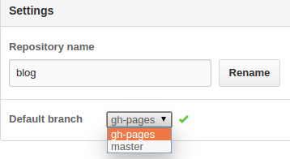
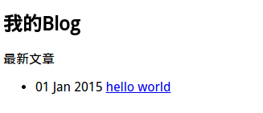

我的好友


Git是一个开源的分布式版本控制系统，用以有效、高速的处理从很小到非常大的项目版本管理。
GitHub是一个提供免费托管Git库的站点
GitHub Pages的特点：免费托管、绑定域名、自带主题、支持自制页面和Jekyll。
Jekyll是一个静态站点生成器，它会根据网页源码生成静态文件。它提供了模板、变量、插件等功能，可以用来编写整个网站。
托管于GitHub,不用担心文章的丢失,即使文章误删也可以快速恢复
免费&无限流量
可以绑定自己的域名(只能绑定一个)
安装Ruby（因为Jekyll是Ruby写的）
$ sudo apt-get install ruby ruby-dev
修改ruby软件源
$ gem sources --remove http://rubygems.org/
$ gem sources -a https://ruby.taobao.org/
$ gem sources -u
安装Jekyll
$ sudo gem install jekyll
可能需要等一会
安装NodeJs 不然运行的话会报 Could not find a JavaScript runtime.
$ sudo apt-get install nodejs
到此本地Jekyll环境就搭建好了
先确保本地已经搭建Git环境且有Git账号，然后GitHub 创建一个项目 假定为Blog
克隆项目到本地(将下面的username换成你的名字)
$ git clone https://github.com/username/Blog.git
切换到Blog目录
$ cd Blog
修改分支名称
$ git branch -m master gh-pages
$ git push origin gh-pages
在GitHub的Blog项目找到主分支切换，选择gh-pages分支

删除GitHub的master分支
$ git push --delete origin master
绑定域名（没有域名可以忽略）
$ vim CNAME
在里面填入你的域名，并将域名的CNAME记录指向到ursename.github.io
创建Jekyll的配置
$ vim _config.yml
在里面填入以下内容
title: My Blog
baseurl: ""
创建模板文件夹
$ mkdir _layouts
创建一个模板文件
$ vim _layouts/default.html
在里面写入以下内容
<!DOCTYPE html>
<html>
<head>
<meta http-equiv="content-type" content="text/html; charset=utf-8" />
<title>{{ page.title }}</title>
</head>
<body>
{{ content }}
</body>
</html>
创建文章目录
$ mkdir _posts
创建一篇文章
$ vim _posts/2015-01-01-hello_world.md
在里面填入以下内容
---
layout: default
title: hello world
---
<h2>{{ page.title }}</h2>
<p>你好，世界</p>
创建首页
$ vim index.md
在里面填入以下内容
---
layout: default
title: 我的Blog
---
<h2>{{ page.title }}</h2>
<p>最新文章</p>
<ul>
{% for post in site.posts %}
<li>
{{ post.date | date_to_string }}
<a href="{{ site.baseurl }}{{ post.url }}">{{ post.title }}</a>
</li>
{% endfor %}
</ul>
这时的目录结构应该是这样的
.
├── _config.yml
├── index.md
├── _layouts
│ └── default.html
├── _posts
│ └── 2015-01-01-hello_world.md
└── README.md
本地环境运行
$ jekyll server
正常会在4000端口运行，用浏览器打开127.0.0.1:4000,如果看到以下的内容，那么就搭建成功了

提交并推送到GitHub
$ git add .
$ git commit -m "hello world"
$ git push origin gh-pages
这时打开上面你CNAME指向的域名或者GitHub的域名（usename.github.io/Blog）
一个简单的博客就搭建完成了
注：push到GitHub后不会立即生效，大概要等30s左右
前端小白，正在慢慢成长中，愿各位大牛多多指点！
© 2016 King Sun. All rights reserved | Design by King Sun